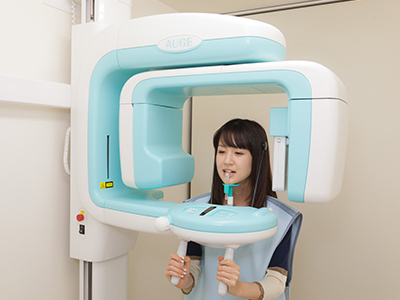
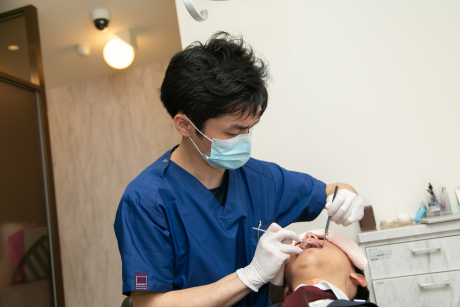

First 鈴木歯科医院の初診の流れをご紹介します
STEP1：受付
まずはお電話かメールにてご予約をお願いします。ご来院されましたら受付をお済ませください。その際には健康保険証のご提示をお願いします。また問診票へのご記入をお願いします。問診票はインターネットでもダウンロードできますので、事前にご記入いただいた問診票がございましたら、そちらをご提出ください。

STEP2：カウンセリング
まず主訴（しゅそ：歯の痛みや違和感などのご来院理由）をお伺いします。問診票を参考にほかのお悩みやご要望なども詳しく伺いますので気になることは何でもお気軽にご相談ください。

STEP3：口腔内検査
歯の痛みはなぜ起こるのですか？ 歯の痛みは，主にむし歯（う蝕）と歯周病によって起こりますが，それ以外の原因もあります。ここでは，まず歯の痛みとその様々な原因について説明し，次にその中でも最も原因として多いむし歯や歯周病の成り立ちと予防法について解説します。そして最後にその原因となるむし歯菌と歯周病の細菌についても解説していただきます。

STEP4：応急処置
「痛みがある」「出血している」などの症状がある場合などは必要に応じて応急処置をします。
STEP5：治療計画のご説明
精密検査の結果に基づいて、治療計画を立てわかりやすく丁寧にご説明します。治療に選択肢がある場合はそれぞれの特徴・メリット・デメリットなどをご説明します。疑問点などがありましたら、遠慮なくおたずねください。治療計画をご理解いただき、ご納得されましたら、次回より治療を開始します。STEP6：次回予約
歯の痛みはなぜ起こるのですか？ 歯の痛みは，主にむし歯（う蝕）と歯周病によって起こりますが，それ以外の原因もあります。ここでは，まず歯の痛みとその様々な原因について説明し，次にその中でも最も原因として多いむし歯や歯周病の成り立ちと予防法について解説します。そして最後にその原因となるむし歯菌と歯周病の細菌についても解説していただきます。